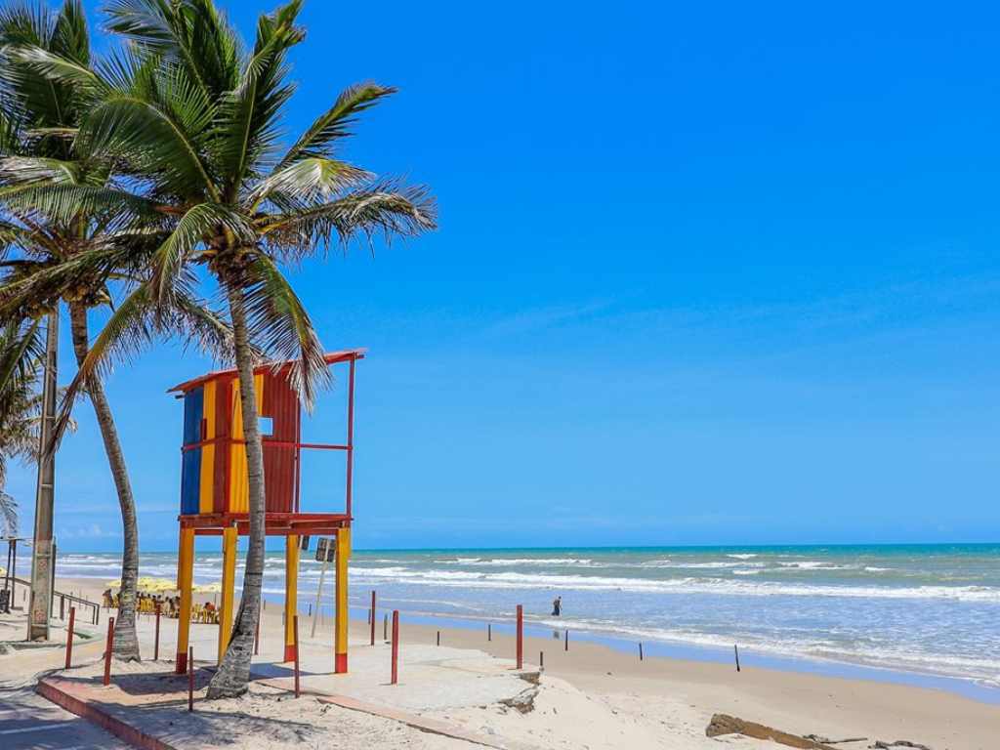

Sergipe é o menor estado do Brasil em extensão territorial, localizado na região Nordeste e conhecido por suas belas praias, riqueza cultural e hospitalidade. Sua capital, Aracaju, destaca-se pela qualidade de vida, pela orla organizada e pelos atrativos turísticos à beira-mar. O estado possui importantes pontos naturais, como o Cânion do Xingó, uma das paisagens mais impressionantes do Nordeste, formado pelas águas do rio São Francisco. Sergipe também é reconhecido pelas festas populares, pelo forró, pelo artesanato e pela culinária típica, que valoriza frutos do mar e pratos tradicionais da cultura nordestina.

Voltar